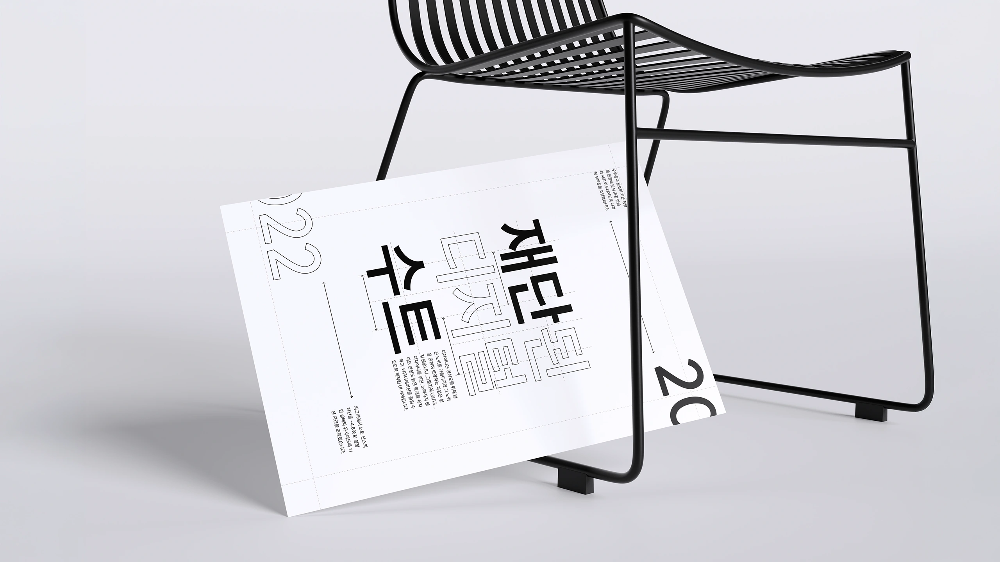
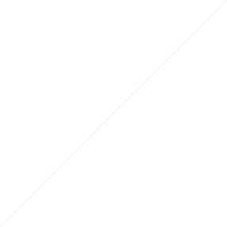
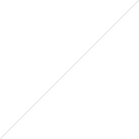
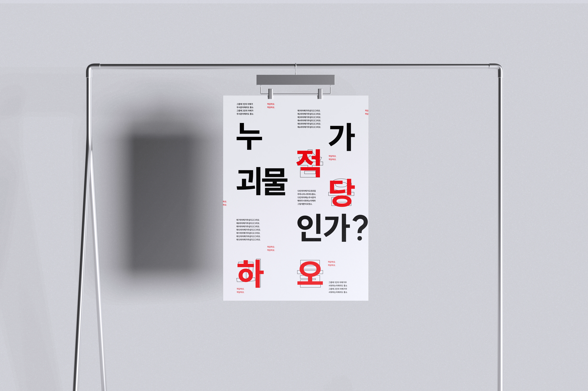
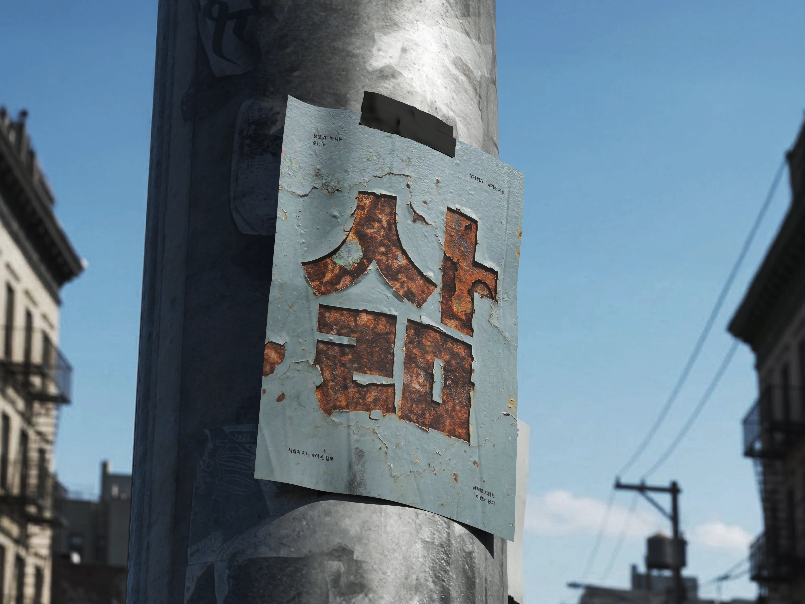

-5%
“13인의 아해가 도로로 질주하오.” 막다른 골목을 향해 달리는 발걸음 사이로 두려움이 번진다. 누가 먼저 달리기 시작했는지, 무엇을 피해 이곳까지 왔는지 알 수 없다. 서로의 얼굴을 바라보는 동안에도 길은 계속 좁아진다. 나는 잠시 걸음을 멈추고 뒤를 돌아본다. 끝이라고 여겼던 자리에도 다른 방향은 남아 있다. 달리지 않아도 괜찮다는 생각이 들자, 비로소 길 위의 작은 풍경들이 눈에 들어온다.

한글과 영문, 숫자의 조화와 읽기 편한 글자 간격이 특징인 SUIT를 분석한 서체꼴 이야기 웹사이트입니다. 자형, 자간과 행간, 크기와 무게를 살펴보고 유사 서체와의 비교와 포스터를 통해 SUIT의 특징을 소개합니다.
A typeface exploration website analyzing SUIT, a UI sans-serif with harmonious Korean and Latin characters, numerals, and readable spacing. It examines letterforms, letter and line spacing, size, and weight, presenting SUIT’s characteristics through typeface comparisons and typographic posters.
디자이너를--위한@
/>?*--인터페이스--
FONT&
0123456789.
한글과 어울리지 않는 Grotesque 계열의 영문자와 숫자, 어긋나 있는 중앙 정렬, 넓은 자간 같은 문제들이 있습니다. 디자이너는 완성도를 위해 많은 노력을 기울이지만 그 노력을 온전히 반영하는 과정은 쉽지 않습니다. 그렇기에 UX/UI 디자이너를 위한, 노력하지 않아도 완성도 높은 형태를 유지할 수 있도록 제작된 UI 서체입니다.
Issues such as Grotesque-style Latin letters and numerals that clash with Hangul, misaligned centering, and overly wide letter spacing remain common. Designers put considerable effort into refining their work, yet translating that effort faithfully into the final result is not always easy. This UI typeface was created for UX/UI designers to help maintain a polished, consistent appearance with less effort and reduce the need for back-and-forth communication.


글자의 위, 아래 빈 공간이 같아 button 속 글자, icon과 글자가 나란히 있는 경우에 가운데를 맞추기 위해 위아래 여백을 서로 다르게 하지 않아도 됩니다. Metaphor로 흔히 활용되는 글자의 경우 그 자체를 UI 요소로 활용할 수 있도록 일부 고려되었습니다.
Equal space above and below the letters allows text to sit centrally within buttons and alongside icons without requiring uneven vertical padding. For letters commonly used as metaphors, some consideration was given to allowing them to serve as UI elements themselves.
Spacing : 0
네오 그로테스크 산세리프
Spacing : 0%
네오 그로테스크 산세리프
피그마에서 노토 산스의 자간을 -4.8%로 설정한 상태로 기본 자간을 조정했습니다. 구두점과 괄호의 기본 정렬을 한글에 맞춰 조정하고 한글과 서로 어우러지도록 시각적 부피감을 조절했습니다.
The default letter spacing was adjusted in Figma by setting Noto Sans’s tracking to −4.8%. Punctuation and parentheses were aligned to suit Hangul, and their visual weight was refined to create a harmonious balance with Korean characters.
다양한 자간 값을 비교하며 가독성과 시각적 균형을 검토한 결과, SUIT의 기본 자간을 본문에 가장 적합한 값으로 선정했습니다. 다른 산세리프 서체보다 좁게 설계된 기본 자간에서 균형 잡힌 글의 밀도와 안정적인 읽기 흐름을 확인했습니다.
After comparing a range of letter-spacing values for readability and visual balance, I selected SUIT’s default spacing as the most suitable for body text. Its tighter spacing compared with other sans-serif typefaces provided balanced text density and a smooth reading flow.
일부 인용 및 재구성
이상 「오감도 시제1호」 (1934)
“13인의 아해가 도로로 질주하오.” 막다른 골목을 향해 달리는 발걸음 사이로 두려움이 번진다. 누가 먼저 달리기 시작했는지, 무엇을 피해 이곳까지 왔는지 알 수 없다. 서로의 얼굴을 바라보는 동안에도 길은 계속 좁아진다. 나는 잠시 걸음을 멈추고 뒤를 돌아본다. 끝이라고 여겼던 자리에도 다른 방향은 남아 있다. 달리지 않아도 괜찮다는 생각이 들자, 비로소 길 위의 작은 풍경들이 눈에 들어온다.
“13인의 아해가 도로로 질주하오.” 막다른 골목을 향해 달리는 발걸음 사이로 두려움이 번진다. 누가 먼저 달리기 시작했는지, 무엇을 피해 이곳까지 왔는지 알 수 없다. 서로의 얼굴을 바라보는 동안에도 길은 계속 좁아진다. 나는 잠시 걸음을 멈추고 뒤를 돌아본다. 끝이라고 여겼던 자리에도 다른 방향은 남아 있다. 달리지 않아도 괜찮다는 생각이 들자, 비로소 길 위의 작은 풍경들이 눈에 들어온다.
“13인의 아해가 도로로 질주하오.” 막다른 골목을 향해 달리는 발걸음 사이로 두려움이 번진다. 누가 먼저 달리기 시작했는지, 무엇을 피해 이곳까지 왔는지 알 수 없다. 서로의 얼굴을 바라보는 동안에도 길은 계속 좁아진다. 나는 잠시 걸음을 멈추고 뒤를 돌아본다. 끝이라고 여겼던 자리에도 다른 방향은 남아 있다. 달리지 않아도 괜찮다는 생각이 들자, 비로소 길 위의 작은 풍경들이 눈에 들어온다.
“13인의 아해가 도로로 질주하오.” 막다른 골목을 향해 달리는 발걸음 사이로 두려움이 번진다. 누가 먼저 달리기 시작했는지, 무엇을 피해 이곳까지 왔는지 알 수 없다. 서로의 얼굴을 바라보는 동안에도 길은 계속 좁아진다. 나는 잠시 걸음을 멈추고 뒤를 돌아본다. 끝이라고 여겼던 자리에도 다른 방향은 남아 있다. 달리지 않아도 괜찮다는 생각이 들자, 비로소 길 위의 작은 풍경들이 눈에 들어온다.
다양한 행간 값을 비교하며 가독성과 읽기 흐름을 검토한 결과, 본문에 가장 적합한 값으로 160%를 선정했습니다. 글줄을 명확하게 구분하면서도 다음 줄로 시선이 자연스럽게 이어져, 장문의 글에서도 편안하고 안정적인 읽기 흐름을 확인했습니다.
After comparing a range of line heights for readability and reading flow, I selected 160% as the most suitable for body text. It clearly separates each line while guiding the eye naturally to the next, providing a comfortable, steady reading experience even in longer passages.
“13인의 아해가 도로로 질주하오.” 막다른 골목을 향해 달리는 발걸음 사이로 두려움이 번진다. 누가 먼저 달리기 시작했는지, 무엇을 피해 이곳까지 왔는지 알 수 없다. 서로의 얼굴을 바라보는 동안에도 길은 계속 좁아진다. 나는 잠시 걸음을 멈추고 뒤를 돌아본다. 끝이라고 여겼던 자리에도 다른 방향은 남아 있다. 달리지 않아도 괜찮다는 생각이 들자, 비로소 길 위의 작은 풍경들이 눈에 들어온다.
“13인의 아해가 도로로 질주하오.” 막다른 골목을 향해 달리는 발걸음 사이로 두려움이 번진다. 누가 먼저 달리기 시작했는지, 무엇을 피해 이곳까지 왔는지 알 수 없다. 서로의 얼굴을 바라보는 동안에도 길은 계속 좁아진다. 나는 잠시 걸음을 멈추고 뒤를 돌아본다. 끝이라고 여겼던 자리에도 다른 방향은 남아 있다. 달리지 않아도 괜찮다는 생각이 들자, 비로소 길 위의 작은 풍경들이 눈에 들어온다.
“13인의 아해가 도로로 질주하오.” 막다른 골목을 향해 달리는 발걸음 사이로 두려움이 번진다. 누가 먼저 달리기 시작했는지, 무엇을 피해 이곳까지 왔는지 알 수 없다. 서로의 얼굴을 바라보는 동안에도 길은 계속 좁아진다. 나는 잠시 걸음을 멈추고 뒤를 돌아본다. 끝이라고 여겼던 자리에도 다른 방향은 남아 있다. 달리지 않아도 괜찮다는 생각이 들자, 비로소 길 위의 작은 풍경들이 눈에 들어온다.

Thin부터 Black까지 SUIT의 굵기별 획 두께와 시각적 밀도를 비교했습니다. 같은 서체에서도 무게에 따라 달라지는 글자의 부피감과 리듬을 살펴보고, 콘텐츠의 위계와 인상을 형성하는 방식을 탐구했습니다.
I compared SUIT’s stroke thickness and visual density across weights, from Thin to Black. I explored how changes in weight affect the typeface’s visual presence and rhythm, shaping the hierarchy and character of the content.
윤
정교하게 설계된 무게의 대비는 정보의 우선순위를 명확히 하여 사용자의 시선을 가장 중요한 곳으로 즉각 안내하는 내비게이션 역할을 합니다.
Carefully crafted contrasts in type weight establish a clear information hierarchy, guiding the user’s eye directly to what matters most.
서체의 무게는 색상이나 크기 변화 없이도 텍스트의 긴장감을 조절하며, 전달하려는 목소리에 섬세함과 강렬함을 더합니다.
Thoughtful use of type weight creates visual tension without changes in color or size, giving a brand’s voice the power to feel delicate or bold.

계원예술대학교 창조관 1층의 녹슨 철문에서, 세월의 흔적과 마음의 상처를 안고도 타인을 보듬으며 살아가는 어른의 모습을 떠올렸습니다. 철문을 직접 촬영한 뒤 Nano Banana Pro를 활용해, 거친 표면과 녹의 질감을 ‘삶’이라는 글자에 담은 타이포그래피 포스터를 제작했습니다.
The rusted iron door on the first floor of Kaywon University of Art and Design’s Changjo Building reminded me of adults who embrace others while carrying the marks of time and emotional scars. Using my own photograph and Nano Banana Pro, I created a typographic poster that incorporates the door’s rough surface and rust textures into the Korean word “삶” (life).